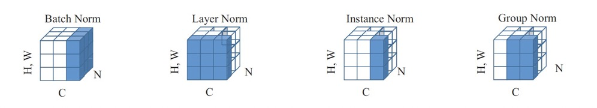

归一化（Normalization）
目的：
- 应用层面需要统一量纲
- 在使用梯度下降发求解最优化问题时，归一化或标准化后可以加快梯度下降的求解速度，即提升收敛速度
- 可以避免神经元饱和。神经元的激活在0或1时会饱和，这些区域梯度几乎为0，这样的话在反向传播的时候局部梯度也会接近0。因此归一化可以有效缓解梯度消失
- 避免数据中小的数值被大数值吞噬，也避免数值太大引发的数值问题。（输入图像的值）
为什么要归一化
假设w1在[-10,10],w2在[-100,100]，梯度每次都前进一个单位，则w1在搜索全局最优时会相对来说走的更『快』。即提高了收敛速度
归一化类型
线性归一化
标准归一化
归一化后均值为0，标准差为1，$ \mu $ 为左右样本数据的均值，$\sigma$ 是所有样本数据的标准差。
批归一化（Batch Normalization）
在网络中间对数据进行归一化
优点
- 减少对超参数的依赖，某些情况下可以取消Dropout方法或者L2正则项参数
- 减少对学习率的要求（加强对学习率参数的鲁棒性）
- 破坏原来的数据分布，一定程度上缓解过拟合，防止每批训练中某一个样本经常被选中
- 减少梯度消失（数据分布奇怪使激活函数输入接近0或者1，梯度很小）
算法流程
$x_{i}$是上一层的输出结果，B和Y是学习参数
- 计算上一层输出数据的均值
- 计算上一层输出数据的标准差
进行归一化处理，得到
分母加一个极小值防止除0
重构
gamma和beta是可学习参数。此时的均值是计算所有批次的mu_{beta}值的平均值得到的，标准差是每个批次的标准差的无偏估计。
和组归一化比较（Group Normalization）
如果batch比较小，导致估计的值和整个数据集的真实均值方差差距较大，BN的误差就会很大。
GN是将通道（channel）分成组，在每组内计算归一化的均值和方差，其准确度在各种批量大小下都很稳定
和权重归一化比较（weight normalization）
WN是对网络权重W进行归一化，适用于RNN，因为RNN处理的队列是变长的，基于时间状态计算，很难保存每个状态下的均值和方差，效率很低。
适用范围
适用于batch较大，数据分布比较接近的场景，不适用于动态网络和RNN结构。
梯度方向推导

背诵版本：

训练和测试时的区别：
常用的归一化层

BN代码实现，以及多卡训练的sync_bn
用numpy实现BN：
1 | import numpy as np |
BN 的性能和 batch size 有很大的关系。batch size 越大，BN 的统计量也会越准。然而像检测这样的任务，占用显存较高，一张显卡往往只能拿较少的图片（比如 2 张）来训练，这就导致 BN 的表现变差。一个解决方式是 SyncBN：所有卡共享同一个 BN，得到全局的统计量。
单卡上的 BN 会计算该卡对应输入的均值、方差，然后做 Normalize；SyncBN 则需要得到全局的统计量，也就是“所有卡上的输入”对应的均值、方差。一个简单的想法是分两个步骤：
- 每张卡单独计算其均值，然后做一次同步，得到全局均值
- 用全局均值去算每张卡对应的方差，然后做一次同步，得到全局方差
但两次同步会消耗更多时间，事实上一次同步就可以实现